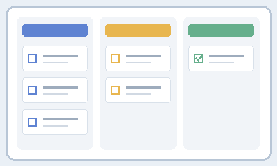

Про автора
Мене звати Богдан. Я навчаюся на інженерії програмного забезпечення та вивчаю веброзробку.
Мій навчальний проєкт — TaskBoard.

TaskBoardМене звати Богдан. Я навчаюся на інженерії програмного забезпечення та вивчаю веброзробку.
Мій навчальний проєкт — TaskBoard.
| Етап | Що вивчаю | Статус |
|---|---|---|
| 1 | Git і GitHub | Готово |
| 2 | HTML, CSS і JavaScript | У процесі |
| 3 | Python та ООП | Далі |
| 4 | Flask і бази даних | Далі |
Пошта: halushko.b.m_ipz24@rcit.ukr.education
GitHub: Мій профіль